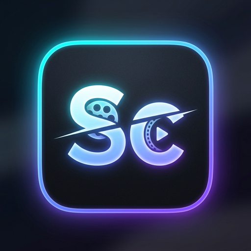

StudioCut
Loading your creative workspace...
StudioCut
File
New Project
Ctrl+N
Open Project…
Ctrl+O
Save
Ctrl+S
Save As…
Ctrl+Shift+S
Import Media…
Ctrl+I
Export Video…
Ctrl+E
Project Settings…
Edit
Undo
Ctrl+Z
Redo
Ctrl+Shift+Z
Cut
Ctrl+X
Copy
Ctrl+C
Paste
Ctrl+V
Duplicate
Ctrl+D
Select All
Ctrl+A
Deselect All
Ctrl+Shift+A
Delete
Del
Ripple Delete
Shift+Del
View
✓ Media Browser
✓ Inspector
✓ Timeline
✓ Audio Mixer
Dual Monitor Mode
Video Scopes
Graph Editor
Safe Margins
Fullscreen Preview
F11
Clip
Split at Playhead
Ctrl+B
Freeze Frame
Shift+F
Insert Edit
,
Overwrite Edit
.
Match Frame
F
Add Marker
M
Help
Help & FAQ
About StudioCut
Untitled Project
●
─
☐
✕
New
Open
Save
Import
View
✓ Media Browser
✓ Preview Player
✓ Inspector
✓ Timeline
Select
Razor
Default
Edit
Media
Color
Audio
Reset
Settings
Help
Export
Media
▦
☰
◀
📁 Media
✨ Effects
🔄 Trans
𝐓 Text
📝 Script
📥
Import Media
Click to browse or drag & drop video, audio, or image files here
📂 Browse Files
✨ Sample Media
Program
Source
Dual
16:9 · 1920×1080 · 30fps
PROXY
📊
📈
🎥 4-Up
No Media Loaded
In/Out: 00:00:00:00
🎥
Source Monitor
Double-click media in browser to preview & mark In/Out
00:00:00:00
[
⇤
◀
▶
⇥
]
✕
Insert
Overwrite
🎦
🎵
00:00:00:00
🎬
Preview
Add clips to the timeline to see a live preview here
📊 Scopes
📈 Graph Editor
✕
16:9 📺 Landscape
9:16 📱 Portrait
1:1 ⏹ Square
4:3 📼 Standard
21:9 🎬 Cinema
00:00:00:00
00:00:00:00
0.25x
0.5x
0.75x
1.0x
1.5x
2.0x
Inspector
All
Video
Audio
Color
▶
🎯
No Selection
Select a clip on the timeline to view and edit its live properties
⏏️ OVR
I: —
O: —
✕
100%
🔍+
🔍-
⊞
📁 Media
▶
◀
🎯 Inspector